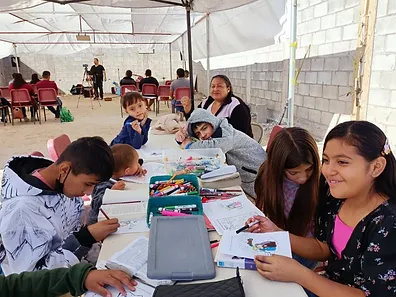

Grupos en casa
Los grupos en casa son la forma perfecta para ayudarnos a cumplir la misión como iglesia, en ellos adoramos, evangelizamos, tenemos comunión, discipulados y servimos a la manera de Jesús.
Los horarios y ubicación se anunciaran los Domingos en nuestra pagina de Facebook

Clases dominicales
Son estudios para los niños y jóvenes de acuerdo a su edad, cada edad y etapa de la vida requiere una enseñanza y modo específico de aprender por eso es importante tener departamentos individuales dependiendo a la edad
Consejería para parejas
La familia son la base para una sociedad fuerte, siempre y cuando estén asentadas en una base solida por eso es nuestro interés en las familias y parejas brindarles las herramientas, para poder resolver conflictos siempre guiándonos con bases bíblicas
Instituto Bíblico
Próximamente